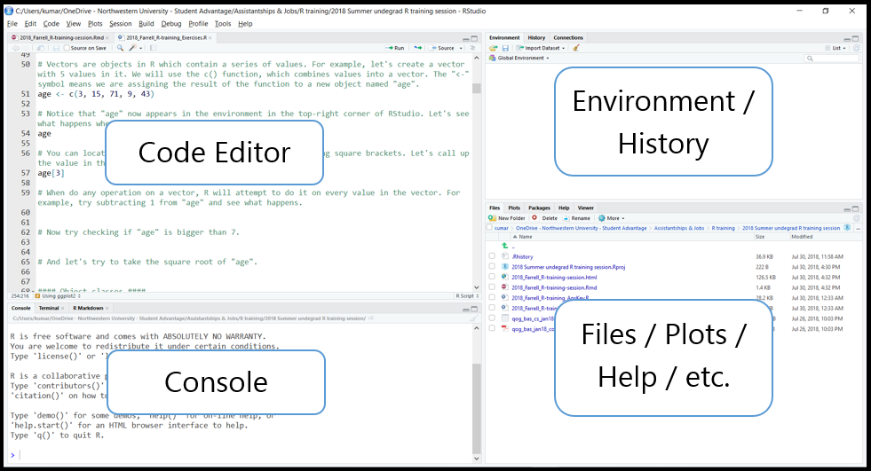
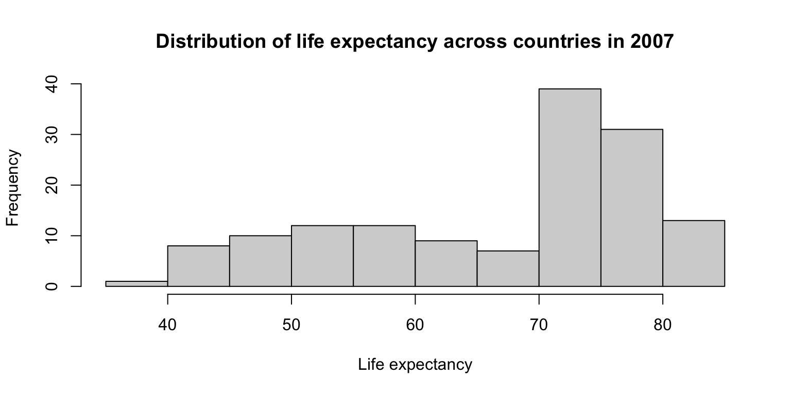

Intro to R: Day 1
Alice Zhao
September 2024
Introduction
Why R?
- R is open source
- R has many statistical capabilities
- R can create custom data visualizations
- R has a large community of users
What is RStudio?
- RStudio is an integrated development environment (IDE) for R
- RStudio provides a user-friendly interface for coding
- RStudio Desktop is the most commonly used version of the software
- Posit (formerly known as RStudio) is the company that devloped and maintains RStudio
Exploring the IDE

Some key concepts
You will hear these terms often this week:
- Objects
- Variables
- Data Frames
- Functions
- Packages
Starting with the basics
- Arithmetic with R
- Objects and variable assignment
- Data types, incl.: character, numeric, logical, factors
- Data structures, incl.: vectors, matricies, data frames, lists
Our materials
All of our materials are available at github.com/NUMLDS/bootcamp-2024. Today, you will only need to work with two files, which are in the ZIP file linked at the top of the Github page.
Starting with the R3 session later this week, you will be working with a much wider set of files. Tomorrow, you will learn how to make a copy of the whole bootcamp-2024 repository using Git.
Basics and data types
Arithmetic
At its most basic level, you can use R as a calculator. The basic
operators are all what you would expect for addition (+),
subtraction (-), multiplication (*), division
(/), and exponentiation (^). You can use
parentheses to indicate which operation should take place first.
You can save numbers or the results of operations as objects
(whose names must start with a character) using the assignment operator
<- or a single equal sign =. We sometimes
call these objects variables. Look in the
Environment to see what objects currently exist.
## [1] 55Arithmetic: exercise
Open up the file R1-R2_exercises.R in RStudio.
Do
the following tasks:
- Pick a number; save it as
x - Multiply x by 3
- Take the log of the above
- Subtract 4 from the above
- Square the above
Arithmetic: exercise
## [1] 15## [1] 2.70805## [1] -1.29195## [1] 1.669134Functions
Functions are called with functionName(parameters).
Multiple paramters are comma-separated. Paramters can be named.
For unnamed parameters, the order matters. R functions don’t change the
objects passed to them (more on this later).
Let’s take a look at a simple function, log(), which
takes the log of a number. You can access its help file by entering
?log in the console. Do so now. What does the function do?
What are the arguments?
Functions
## [1] 2.302585## [1] 3.321928Data types
numeric: real or decimal
integer: a specific type; most numbers are numeric instead
complex: ex:
2+5i
character:
"text data", denoted with quotes
('single quotes'and"double quotes"both work)logical:
TRUEorFALSE
(When coerced into numeric type,TRUE=1andFALSE=0)Use
class()on an object to check its type
Data types
## [1] "some text"## [1] "character"## [1] 5## [1] "numeric"Logical Operators
The basic logical operators in R are:
==for “is equal”;!for “is not”&for “and”;|for “or”<for “lesser than”;>for “more than”
A statement with logical operators will return a logical object
TRUE or FALSE.
Logical Operators
## [1] TRUE## [1] TRUE## [1] TRUE## [1] TRUELogical Operators: exercise
- Check if 1 is bigger than 2
- Check if 1 + 1 is equal to 2
- Check if it is true that the strings “eat” and “drink” are not equal to each other
- Check if it is true that 1 is equal to 1 AND 1 is equal to
2
(Hint: remember what the operators&and|do) - Check if it is true that 1 is equal to 1 OR 1 is equal to 2
Logical Operators: exercise
## [1] FALSE## [1] TRUE## [1] TRUE## [1] FALSE## [1] TRUEPackages
- Install the package
ggplot2
(You only need to do this the first time) - Load the package
ggplot2 - Open the help file for the dataset
mpg - Homework: Install and load the package
tidyverseand open the help file for the functionrecode
Packages
Data structures
Vectors
Vectors store multiple values of a single data type (i.e. vectors are homogeneous)
Create a vector using the
c()functionArithmetic operators and many functions can apply to vectors (i.e. some functions are vectorized)
Vectors can be indexed by:
- element position (
vec[1]) - ‘slice’ position (
vec[1:3]) - condition (
vec[vec>2]).
- element position (
Vectors
## [1] 1## [1] 1 2## [1] 2 4 6## [1] 0.0000000 0.6931472 1.0986123Vectors: exercise
Return to the exercise file and complete the following tasks:
- Run the code to generate variables
x1andx2 - Select the 3rd element in
x1 - Select the elements of x1 that are less than 0
- Select the elements of x2 that are greater than 1
- Create x3 containing the first five elements of x2
- Select all but the third element of x1
Vectors: exercise
## [1] 1.084441## [1] -1.207066 -2.345698## [1] 1.006056 1.459494 2.915835## [1] -1.2070657 0.2774292 -2.3456977 0.4291247Interlude: Missing Values
Real-world data often include missing values. In R, missing values
are stored as NA. Vectors containing any data type can
contain missing values. Functions deal with missing values differently,
and sometimes require arguments to specify how to deal with missing
values.
## [1] NA## [1] 4.75Interlude: Missing Values
You can check if a vector contains missing values by the function
is.na(). Since this returns a logical vector, you can use
sum() or mean() on the result to count the
number or proportion of TRUE values.
## [1] FALSE FALSE TRUE FALSE FALSE## [1] 1## [1] 0.2Factors
- Factors are a special type of vector that are useful for categorical variables
- Factors have a limited number of levels that the variable can take, set by the user
- For categorical variables with natural ordering between categories, we often want to use ordered factors
- Create factors with
factor(), which includes an argument forlevels =
Factors
## [1] "factor"## [1] "green" "red" "yellow"Lists
- Lists are like vectors, but more complex.
- Lists are heterogenous: they can store single elements, vectors, or even lists.
- You can keep multi-dimensional and ragged data in R using lists.
- You can index an element in a list using double
brackets:
[[1]]. Single brackets will return the element as a list.
Lists
## [[1]]
## [1] 42## [1] "list"## [1] 42## [1] "numeric"Matrices
- Matrices in R are two-dimensional arrays.
- Matrices are homogeneous: all values of a matrix must be of the same data type.
- You can initialize a matrix using the
matrix()function. - Matrices are used sparingly in R, primarily for numerical calculations or explicit matrix manipulation.
- Matrices are indexed as follows:
mat[row no, col no].
Matrices
## [,1] [,2] [,3]
## [1,] 1 3 5
## [2,] 2 4 6## [1] 3Data frames
- Data frames are the core data structure in R. A data frame is a list of named vectors with the same length.
- Data frames are heterogeneous: the vectors in a data frames can each be of a different data type.
- Columns are typically variables and rows are observations.
- You can make make data frames with
data.frame(), or by combining vectors withcbind()orrbind(). - Data frames can be indexed in the same way as
matrices:
df[row no, col no]. - Data frames can also be indexed by using
variable/column names:
df$varordf[["var"]].
Data frames: exercise
- Load the example data frame using the code provided
- Identify the number of observations (rows), number of variables
(columns), and names of variables using
str() - Select the variable
mpg - Select the 4th row
- Square the value of the
cylvariable and store this as a new variablecylsq
Data frames: exercise
## 'data.frame': 32 obs. of 11 variables:
## $ mpg : num 21 21 22.8 21.4 18.7 18.1 14.3 24.4 22.8 19.2 ...
## $ cyl : num 6 6 4 6 8 6 8 4 4 6 ...
## $ disp: num 160 160 108 258 360 ...
## $ hp : num 110 110 93 110 175 105 245 62 95 123 ...
## $ drat: num 3.9 3.9 3.85 3.08 3.15 2.76 3.21 3.69 3.92 3.92 ...
## $ wt : num 2.62 2.88 2.32 3.21 3.44 ...
## $ qsec: num 16.5 17 18.6 19.4 17 ...
## $ vs : num 0 0 1 1 0 1 0 1 1 1 ...
## $ am : num 1 1 1 0 0 0 0 0 0 0 ...
## $ gear: num 4 4 4 3 3 3 3 4 4 4 ...
## $ carb: num 4 4 1 1 2 1 4 2 2 4 ...## mpg cyl disp hp drat wt qsec vs am gear carb
## Hornet 4 Drive 21.4 6 258 110 3.08 3.215 19.44 1 0 3 1Reading files
Working directories
The working directory is the folder where R scripts and projects look for files by default.
You can go to the Files tab in the bottom right window in RStudio and
find the directory you want. Then you can set it as a working directory
with an option in the “More” menu. Or you can use the
setwd() as follows:
Reading files: read.csv()
Reading files: exercise
- Check your working directory with
getwd(). - Import the
gapminderdata set usingread.csv()and see what happens in the Environment tab. - Take a look at the data using
head()andView()
After installingtidyverse: - Load the
readrpackage - Use
read_csv()to load the gapminder data. Read the message generated in the console.
Reading files: exercise
## Rows: 1704 Columns: 6
## ── Column specification ────────────────────────────────────────────────────────
## Delimiter: ","
## chr (2): country, continent
## dbl (4): year, pop, lifeExp, gdpPercap
##
## ℹ Use `spec()` to retrieve the full column specification for this data.
## ℹ Specify the column types or set `show_col_types = FALSE` to quiet this message.Reading files
- You can also read files from the full local path or from URLs
- You can read files using RStudio’s interface through the “Files” tab
- For other file types, use the packages
haven(Stata, SAS, SPSS) orreadxl(Excel)
Roadmap
Roadmap for the rest of the R sessions
Today we will learn how to do basic data manipulation and data visualization in base R
Most commonly, you will do these tasks using specialized packages such as
tidyverseordata.tableSo why teach these skills in base R?
- This helps you understand how R works
- Many packages rely on how these tasks work in base R
- Useful for simple tasks in workflows that otherwise don’t involve much manipulation or visualization
Data manipulation
Exploring data frames
You can view data frames in RStudio with
View()and examine other characteristics withstr(),dim(),names(),nrow(), and more.When run on a data frame,
summary()returns summary statistics for all variables.mean(),median(),var(),sd(), andquantile()are useful functions for variables.Frequency tables are a simple and useful way to explore discrete/categorical variables in data frames
table()creates a frequency table of one or more variablesprop.table()can turn a frequency table into a proportion table
Exploring data frames: exercise
- Run
summary()on the gapminder data - Find the mean of the variable
pop - Create a frequency table of the variable
yearusingtable() - Create a proportion table of the variable
continentusingprop.table()
(Hint: check the help file forprop.table()to see what the input should be)
Exploring data frames: exercise
## country year pop continent
## Length:1704 Min. :1952 Min. :6.001e+04 Length:1704
## Class :character 1st Qu.:1966 1st Qu.:2.794e+06 Class :character
## Mode :character Median :1980 Median :7.024e+06 Mode :character
## Mean :1980 Mean :2.960e+07
## 3rd Qu.:1993 3rd Qu.:1.959e+07
## Max. :2007 Max. :1.319e+09
## lifeExp gdpPercap
## Min. :23.60 Min. : 241.2
## 1st Qu.:48.20 1st Qu.: 1202.1
## Median :60.71 Median : 3531.8
## Mean :59.47 Mean : 7215.3
## 3rd Qu.:70.85 3rd Qu.: 9325.5
## Max. :82.60 Max. :113523.1Exploring data frames: exercise
## [1] 29601212##
## 1952 1957 1962 1967 1972 1977 1982 1987 1992 1997 2002 2007
## 142 142 142 142 142 142 142 142 142 142 142 142##
## Africa Americas Asia Europe Oceania
## 0.36619718 0.17605634 0.23239437 0.21126761 0.01408451Subsetting
One of the benefits of R is that we can work with multiple data frames at the same time
We will often want to subset a data frame, i.e. work with a portion of the data frame
There are two common ways to subset a data frame in base R
- Index the data frame:
gapminder[gapminder$continent=="Asia",](note the use of a logical statement and the comma) - Use the
subset()function:subset(gapminder, subset=continent=="Asia")
- Index the data frame:
Sorting
The
sort()function reorders elements, in ascending order by default.- You can flip the order by using the
decreasing = TRUEargument.
- You can flip the order by using the
The
order()function gives you the index positions in sorted order.sort()is useful for quickly viewing vectors;order()is useful for arranging data frames.
Subsetting and Sorting: exercise
- Create a new data frame called
gapminder07containing only those rows in the gapminder data whereyearis 2007 - Created a sorted frequency table of the variable
continentingapminder07
(Hint: usetable()andsort()) - Print out the population of Mexico in 2007
- Try the bonus question if you have time
Subsetting and Sorting: exercise
##
## Oceania Americas Europe Asia Africa
## 2 25 30 33 52## [1] 108700891## # A tibble: 6 × 6
## country year pop continent lifeExp gdpPercap
## <chr> <dbl> <dbl> <chr> <dbl> <dbl>
## 1 China 2007 1318683096 Asia 73.0 4959.
## 2 India 2007 1110396331 Asia 64.7 2452.
## 3 United States 2007 301139947 Americas 78.2 42952.
## 4 Indonesia 2007 223547000 Asia 70.6 3541.
## 5 Brazil 2007 190010647 Americas 72.4 9066.
## 6 Pakistan 2007 169270617 Asia 65.5 2606.Adding and removing columns
When cleaning or wrangling datasets in RStudio, we will often want to create new variables.
Two ways to add a vector as a new variable in R:
Removing columns is easy too:
Recoding variables
A common task when cleaning/wrangling data is recoding variables.
Think about what the recoded variable should look like & then decide on an approach.
- Sometimes, a single function can accomplish the recoding task needed. The new vector can then be assigned to a new column in the data frame.
- If no single function comes to mind, we can initialize a new variable in the data frame, and assign values using indexes and conditional statements.
- More complex recoding tasks can be accomplished
with other packages like
dplyr, which you can preview in the lecture notes.
Recoding variables: exercise
Use the data frame gapminder07 throughout this
exercise.
- Round the values of the variable
lifeExpusinground(), and store this as a new variablelifeExp_round - Print out the new variable to see what it looks like
- Read through the code that creates the new variable
lifeExp_over70and try to understand what it does. - Try to create a new variable
lifeExp_highlowthat has the value “High” when life expectancy is over the mean and the value “Low” when it is below the mean.
Recoding variables: exercise
## [1] 44 76 72 43 75 81Recoding variables: exercise
gapminder07$lifeExp_over70 <- NA # Initialize a variable containing all "NA" values
gapminder07$lifeExp_over70[gapminder07$lifeExp>70] <- "Yes"
gapminder07$lifeExp_over70[gapminder07$lifeExp<70] <- "No"
table(gapminder07$lifeExp_over70)##
## No Yes
## 59 83Recoding variables: exercise
gapminder07$lifeExp_highlow <- NA
gapminder07$lifeExp_highlow[gapminder07$lifeExp>mean(gapminder07$lifeExp)] <- "High"
gapminder07$lifeExp_highlow[gapminder07$lifeExp<mean(gapminder07$lifeExp)] <- "Low"
table(gapminder07$lifeExp_highlow)##
## High Low
## 85 57Aggregating
Notice that the observations (i.e. rows) in our data frame are grouped; specifically, each country is grouped into a continent.
We are often interested in summary statistics by groups.
The
aggregate()function accomplishes this:aggregate(y ~ x, FUN = mean)gives the mean of vectoryfor each unique group inx.meancan be replaced by other functions here, such asmedian.
Try it! In the exercise file, find the mean of life expectancy in 2007 for each continent.
Aggregating: exercise
## gapminder07$continent gapminder07$lifeExp
## 1 Africa 54.80604
## 2 Americas 73.60812
## 3 Asia 70.72848
## 4 Europe 77.64860
## 5 Oceania 80.71950## continent lifeExp
## 1 Africa 54.80604
## 2 Americas 73.60812
## 3 Asia 70.72848
## 4 Europe 77.64860
## 5 Oceania 80.71950Statistics
Here are some easy statistical analyses to conduct in R
- Correlations:
cor(); Covariance:cov() - T-tests:
t.test(var1 ~ var2), wherevar2is the grouping variable - Linear regression:
lm(y ~ x1 + x2, data = df)
- Correlations:
You can store the results of these functions in objects, which is especially useful for statistical models with many components.
Statistics: exercise
Use gapminder07 for all the below exercises.
You’re using some new functions, so refer to help files whenever you get stuck.
- Calculate the correlation between
lifeExpandgdpPercap. - Use a t-test to evaluate the difference in
gdpPercapbetween “high” and “low” life expectancy countries. Store the results ast1, and then print outt1.
Statistics: exercise
## [1] 0.6786624t1 <- t.test(gapminder07$gdpPercap~gapminder07$lifeExp_highlow)
t1 <- t.test(gdpPercap~lifeExp_highlow, data=gapminder07)
t1##
## Welch Two Sample t-test
##
## data: gdpPercap by lifeExp_highlow
## t = 10.564, df = 95.704, p-value < 2.2e-16
## alternative hypothesis: true difference in means between group High and group Low is not equal to 0
## 95 percent confidence interval:
## 12674.02 18539.14
## sample estimates:
## mean in group High mean in group Low
## 17944.685 2338.104Note that t1 is stored as a list. You can now
call up the components of the t-test when you need them.
Statistics: exercise
Conduct a linear regression using
lm()which predictslifeExpas a function ofgdpPercapandpop. Store the results asreg1.- You can define all the variables using the
df$varsyntax, or you can just use variable names and identify the data frame in thedata =argument. - Examples are shown at the bottom of the help file for
lm()
- You can define all the variables using the
Print out
reg1.Run
summary()onreg1.
Statistics: exercise
##
## Call:
## lm(formula = lifeExp ~ gdpPercap + pop, data = gapminder07)
##
## Coefficients:
## (Intercept) gdpPercap pop
## 5.921e+01 6.416e-04 7.001e-09##
## Call:
## lm(formula = lifeExp ~ gdpPercap + pop, data = gapminder07)
##
## Residuals:
## Min 1Q Median 3Q Max
## -22.496 -6.119 1.899 7.018 13.383
##
## Coefficients:
## Estimate Std. Error t value Pr(>|t|)
## (Intercept) 5.921e+01 1.040e+00 56.906 <2e-16 ***
## gdpPercap 6.416e-04 5.818e-05 11.029 <2e-16 ***
## pop 7.001e-09 5.068e-09 1.381 0.169
## ---
## Signif. codes: 0 '***' 0.001 '**' 0.01 '*' 0.05 '.' 0.1 ' ' 1
##
## Residual standard error: 8.87 on 139 degrees of freedom
## Multiple R-squared: 0.4679, Adjusted R-squared: 0.4602
## F-statistic: 61.11 on 2 and 139 DF, p-value: < 2.2e-16Writing files
Writing a data file
We will often want to save the data frames as data files after cleaning/wrangling/etc.
You can use
write.csv()from base R orwrite_csv()fromreadrto do this.Try it! Save the data frame
gapminder07in the same directory thatgapminder5.csvis located.If you use
write.csv(), set the argumentrow.names = FALSEIf you use
write_csv(), it does not include row names/numbers by default
Writing a data file: exercise
Save R objects
You can save all objects in your workspace using
save.image()or by clicking the “Save” icon in the Environment tab.- You can load all objects back in using
load.image()or opening the.RDatafile that is created. - You can save specific objects in an
.RDatafile with thesave()function.
- You can load all objects back in using
If your script file is well-written, you should be able to retrieve all your objects just by running your code again.
If you have a project with code that takes a long time to run, I would recommend using project files.
Data visualization
Base R vs. ggplot2
We will only cover visualization briefly today, using some functions included in base R. Data scientists generally use other packages for data visualization, especially
ggplot2, which we will cover next Monday.So why learn data visualization in base R?
- Some of the simple functions are useful ways to explore data while doing analysis.
- The syntax of visualization in base R is often adopted by other packages.
Histograms
Histograms are a useful way to examine the distribution of a single variable. The base R function for histograms is simple:
hist().Try it! Create a histogram of the variable
lifeExpingapminder07.- When you’re done, look at the help file and try to re-create the histogram, this time with a title and axis labels.
- Bonus: Change the
breaks =argument from its default setting and see what happens.
Histograms: exercise
hist(gapminder07$lifeExp,
main="Distribution of life expectancy across countries in 2007",
xlab="Life expectancy", ylab="Frequency")
Scatterplots
- You can create a scatterplot by providing a formula
containing two variables (i.e.
y ~ x) to theplot()function in R. - Titles and axis labels can be added in
plot()similarly tohist(). - The function
abline()can “layer” straight lines on top of aplot()output.
Scatterplots: exercise
- Create a scatterplot with
lifeExpon the y-axis andgdpPercapon the x-axis. - Add a title and axis labels.
- Bonus: Add a horizontal line indicating the mean of
lifeExponto the plot usingabline().
Scatterplots: exercise

Scatterplots: exercise
plot(gapminder07$lifeExp ~ gapminder07$gdpPercap,
main="Relationship between life expectancy and GDP per capita in 2007",
ylab="Life expectancy", xlab="GDP per capita")
Scatterplots: exercise
plot(gapminder07$lifeExp ~ gapminder07$gdpPercap,
main="Relationship between life expectancy and GDP per capita in 2007",
ylab="Life expectancy", xlab="GDP per capita")
abline(h = mean(gapminder07$lifeExp))